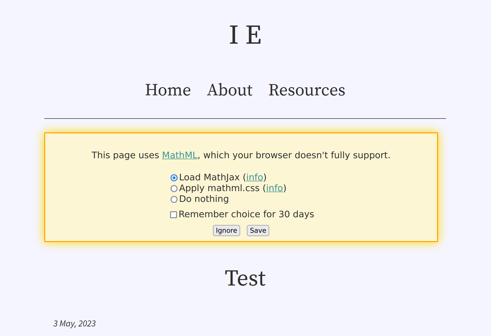

Migrating from Jekyll to Hakyll
I’ve just finished migrating this site from Jekyll to Hakyll. The only noticeable changes are: slightly prettier page URLs, MathML support, and tweaks to syntax highlighting to compensate for using Pandoc. I paid special attention to preserving the Atom feed identifiers so that feed readers aren’t impacted.
You can find the source code at https://github.com/LightAndLight/lightandlight.github.io/.
Background
I’ve been using Jekyll to generate my blog because that’s what GitHub
Pages recommended when I first set things up. Recently I’ve been working
on a math-heavy post, and I decided that I wanted MathML
support for this site. I started exploring possible solutions, and found texmath,
which I then learned is used in Pandoc to convert TeX to
MathML. I know Hakyll has good Pandoc support, and
Haskell is one of my main languages, so I decided to make the switch1.
Changes
Prettier URLs
Change: removed trailing slashes from many blog page URLs (e.g.
from https://blog.ielliott.io/test-post/ to https://blog.ielliott.io/test-post).
Static site generators create HTML files, which typically have file paths ending in .html. Web servers
often map URL paths to filesystem paths to serve files, leading to many URLs ending in
.html. I don’t like this; .html offers me no useful
information. And if it does coincide with the resource’s file
type, that is subject to change.
My Jekyll-based site had “extension-less URLs” (which I call “pretty URLs”), but I
consistently used a trailing slash at the end of every URL (e.g.
https://blog.ielliot.io/test-post/). These days I prefer to use a trailing
slash to signify a “directory-like resource”, under which other resources are “nested”. This aligns with the convention where web servers serve /index.html when / is
requested. My blog posts don’t need an index because they’re self contained, so their URLs shouldn’t
have a trailing slash.
GitHub Pages supports extensionless HTML pages,
serving file x.html when x is requested, so I removed the trailing slash from each page’s
canonical path and make Hakyll generate a file ending in .html at that path
(site.hs#L127,
site.hs#L322-L333).
By default, Hakyll’s watch command doesn’t support pretty URLs. For a little while, I manually
added .html to the URL in the address bar whenever I clicked a link in my site’s preview. I got sick of
this and changed the configuration to resemble GitHub Pages’ pretty URL resolution rules
(site.hs#L30-L55).
I realised how fortunate it was that I could make this change; the relevant Hakyll changes were only
released a week ago!
MathML support
Changes:
- Equations are compiled to MathML
- MathJax is never automatically loaded
- Browsers with poor MathML support display a warning and some options for improvement
I’m becoming more aware of sites that use unnecessary JavaScript. I realised that my blog’s use of MathJax for client-side equation rendering was an example of this. The equations on my blog are static; all the information required to render them is present when I generate the site, so I should be able to compile the equations once and serve them to readers. Client-side MathJax is better suited for fast feedback on dynamic equations, like when someone types an equation into a text box.
I played with compiling LaTeX equations to SVGs
(latex2svg.py,
latex2svg.m4),
but realised it would be hard to make that
accessible. I then
came across MathML and realised that it was the right solution.
MathML still isn’t ubiquitous, so I added a polyfill script based on https://github.com/fred-wang/mathml-warning.js. If you view a math post in a web browser with limited MathML support, you’ll be prompted to improve the experience by loading external resources:

Syntax highlighting
Change: slightly different syntax highlighting.
Pandoc does syntax highlighting differently to Jekyll, and I prefer Jekyll’s output. I’ll explain why in another post. The consequence is that I had to rewrite my syntax highlighting stylesheet, and code might look a little different due to the way Pandoc marks it up.
Thoughts
I had to reimplement a few things that Jekyll did for
me, like the sitemap
(site.hs#L196-206)
and previous/next post links
(site.hs#L240-L260).
I didn’t have to create the Atom feed from scratch, though: Hakyll has a module for that. The whole process was pretty involved (a few days of work) and I
think I only had the appetite for it because I’m currently not working.
This is the most time I’ve spent working on a Hakyll site, and I think I’ve crossed an “inflection point” in my understanding of the library. I can now build features from scratch instead of searching for recipes on the internet. Normally I would approach a static site generator with some impatience, wanting to “get things done” so that I can return to what I find interesting. This time around, I decided to do a deep dive and I gained a lot of experience.
I’m glad I made the switch. While Pandoc has a few annoying issues, I’m not discouraged from fixing them like I would be if I found a problem with Jekyll. Being proficient with Haskell, fixing these issues would just be a variation on normal software development for me.
Also, there were no satisfying search results for how to do this with Jekyll.↩︎